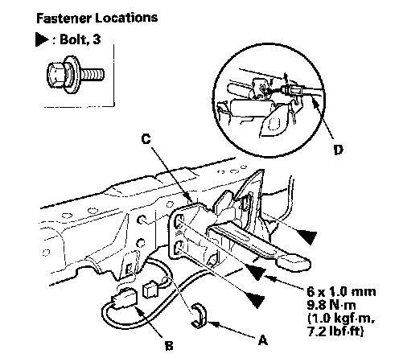
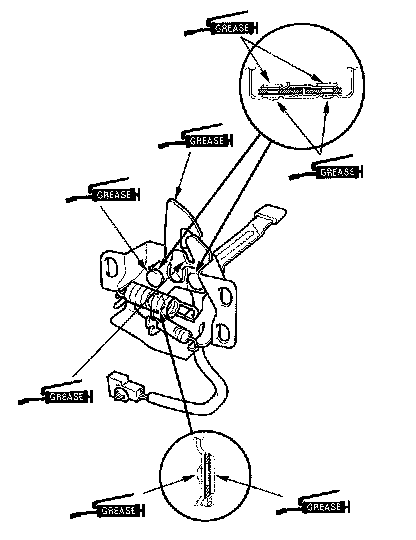

Hood Latch: Service and Repair
Hood Latch Replacement1. Remove the front grille cover.

2. With hood latch switch: Remove the clip (A), then disconnect and detach the hood latch switch connector (B).
3. Remove the bolts, then remove the hood latch (C) from the body, and disconnect the hood opener cable (D) from the hood latch.

4. Install the latch in the reverse order of removal, and note these items:
- Apply multipurpose grease to each location of the hood latch indicated by the arrows.
- Make sure the hood opener cable is connected properly and hood latch switch connector is plugged in properly (for some models).
- Adjust the hood latch alignment.
- Make sure the hood opens properly and locks securely.